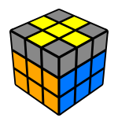
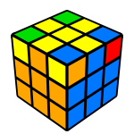

You may be one of those people who would consider this "the hardest thing they've tried to do".
But, as any experienced speedsolver will tell you, it is a lot easier once you learn how to solve it.
In the end, the trick is getting up your speeds.
Nonetheless, welcome to one of the best hobbies you'll quickly find yourself sucked into.
Starting off simple, we're going to go over the EASIEST method for solving a Rubik's cube.
This is commonly referred to as "the beginner's method" but it is really a simplified version of the Fredrich method.
If you plan to improve your speeds, it is almost guaranteed that you will have to learn the real Fredrich method.
First things first, check out my friends at Ruwix.
In order to understand how to manuever your Rubik's cube using some of the algorithms on this page, you need to know notation.
Basic Steps Overview
There are 7 steps to solving the cube.
This won't be too difficult.
What makes the full method, (the advanced method) so much better is we take 7 steps to only 4 steps.
Even so, this is a lot quicker to pick up because it doesn't take as much memorization.
The steps include:
This step of the cube is entirely done on your own. There is no algorithms.
You want the edge pieces to line up with the colored center pieces on the side, like shown below.
Do this with all four white edge pieces and the respective colors.
Good vs bad white cross
Placing in the white corners
This part is all about "solving" the entire white face, so your focus can move to the second layer of the cube.
Basically, corner pieces will have 3 colors on them.
You want the white color to face up with the white face and align them so the colors match the edge pieces you did earlier with the white cross.
When an edge piece is on the D layer, R' D' R D will put it in place in the matching spot above.
The amount of times you do this algorithm may depend on which way the piece is facing.
Filling in the second layer
Until this point the procedure was pretty straight forward but from now on we have to use algorithms.
We can forget the completed white face so let's turn the cube upside down to focus on the unsolved side.
In this step we are completing the first two layers (F2L). There are two symmetric algorithms we have to use in this step. They're called the Right and Left algorithms. These algorithms insert the Up-Front edge piece from the top layer to the middle layer while not messing up the solved white face.
For these algorithms to work, we need to align the edge so it is facing us then use either the left or right algorithm depending on the situation. Left algorithm: U' L' U L U F U' F' Right algorithm: U R U' R' U' F' U F
Solving the "yellow cross"
Sart solving the last layer making a yellow cross on the top of the cube.
It doesn't matter if the pieces are not on their final places so we don't have to pay attention to the colors of the sides.
We can get three possible patterns on the top.
Use this algorithm to go from one state to the other:
F R U R' U' F'

Correcting yellow edges
After making the yellow cross on the top of the cube you have to put the yellow edge pieces on their final places to match the colors of the side center pieces.
Switch the front and left yellow edges with the following algorithm:
R U R' U R U2 R' U
Permutating the Last Layer
Only the last layer corners are left unsolved.
First we have to get them to the right spot, so don't worry about the orientation in this step.
Find a piece which is already on the right place, move it to the right-front-top corner then apply the following algorithm to switch (cycle) the three wrong pieces marked on the image:
U R U' L' U R' U' L
Orientating Last Layer
Hold the cube in your hand with an unsolved corner on the front-right-top corner, then do the algorithm below twice or four times until that specific piece is oriented well:
R'D'RD

It will look like you've messed up the whole cube but don't worry, it will be all right when all the corner pieces are oriented.
Turn the top layer only to move another unsolved yellow piece to the front-right-top corner of the cube and do the same R' D' R D again until this specific piece is ok.
Be careful not to move the two bottom layers between the algorithms and never rotate the whole cube!
Still confused?
Below is a step by step tutorial.
Most of the information on this page is a summarized version of what is covered within the video!
Check it out and give it some support.